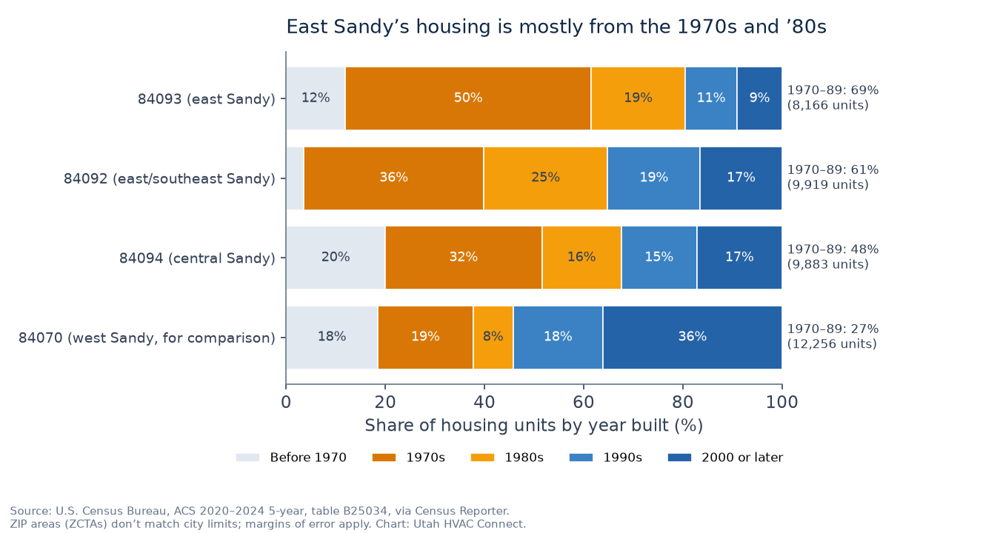

TL;DR
- In east Sandy’s 84093 and 84092, the median homes date to 1978 and 1984, and about 11,700 housing units (65%) were built from 1970 through 1989 (ACS 2020–2024).
- With an average gas furnace lifespan of about 18 years (DOE Building America Solution Center), most of those homes are on a second furnace, and many of those replacements are now 19 to 36 years old themselves.
- So the questions are about what the last replacement left behind: metal flue or PVC venting (and any chimney liner for the water heater), sizing by rule of thumb, ducts as old as the house, and possible asbestos-era materials.
- Sandy lists an “A/C Furnace replacement” permit for any HVAC replacement, including a gas line upgrade. ThermWise listed $300–$350 for 95%+ AFUE furnaces on October 19, 2026.
- Free match request; licensed shops that serve your ZIP may reach out. No prices here, and we don’t quote.
If you own a 1970s or ’80s home in east Sandy, the furnace in your basement is probably not the one the house was built with. Many of these homes are on their second furnace, and some on a third. That changes the conversation when it’s time to replace again: the questions are less about the original house and more about what the last replacement left behind, such as the venting it used, how it was sized, and the ducts it was connected to. (If your furnace really is original, our repair-or-replace guide for original furnaces fits better.)
Utah HVAC Connect is a matchmaker under Apex Lead Group, LLC. We connect Sandy homeowners with licensed Utah HVAC contractors. We don’t sell, install, diagnose, or quote, and this page has no prices.
East Sandy’s housing by the numbers

Sandy spans four main ZIP areas: 84070, 84092, 84093, and 84094 (plus small slivers of two others), per the Census Bureau’s 2020 ZIP-to-place relationship file. Of those four, the Census interior points of 84093 and 84092 sit farthest east, with 84094 in the middle and 84070 to the west (relationship file; Gazetteer). That’s what we mean by east Sandy here.
- 84093: median home built in 1978; 50% of 8,166 housing units were built in the 1970s and 19% in the 1980s, so 69% date from 1970–1989.
- 84092: median 1984; 36% built in the 1970s and 25% in the 1980s, so 61% date from 1970–1989 (of 9,919 units).
- Together, about 11,700 housing units (65%) in these two ZIPs were built from 1970 through 1989. Central Sandy’s 84094 (median 1980) is at 48%; west Sandy’s 84070 (median 1992) is at 27% (ACS 2020–2024, table B25034).
- These are owner-heavy, gas-heated neighborhoods: 90% (84092) and 93% (84093) of occupied homes are owner-occupied, and 89% and 88% heat with utility gas.
ZIP areas don’t match city limits. 84093 also takes in part of Cottonwood Heights, and 84092 reaches into Granite and up Little Cottonwood Canyon, so these figures include some homes outside Sandy. ACS figures are survey estimates with margins of error.
Why your furnace probably isn’t the first one
DOE’s Building America Solution Center lists an average lifespan of 18 years for a gas furnace (from ASHRAE data) and says residential HVAC equipment more than 15 years old can be assumed to be near the end of its useful life (DOE BASC). Applied to east Sandy’s build years, simple arithmetic says most original furnaces would have been replaced in the 1990s or 2000s, and those replacements are now old themselves:
| Home built | First furnace replaced around | Age of that replacement in 2026 | Past ENERGY STAR’s 15-year mark? |
|---|---|---|---|
| 1972 | about 1990 | about 36 years | Yes |
| 1978 (84093 median) | about 1996 | about 30 years | Yes |
| 1984 (84092 median) | about 2002 | about 24 years | Yes |
| 1989 | about 2007 | about 19 years | Yes |
This is an illustration, not a record of any home. Real lifespans vary a lot, some homes are on a third furnace, and some replacements were recent. Ask the shop to confirm your furnace’s age from its labels. ENERGY STAR suggests considering replacement once a furnace is more than 15 years old (ENERGY STAR).
What the last replacement may have left behind
1. The venting path
Look at what leaves the top of the furnace. A metal flue running into a chimney usually means a non-condensing furnace (up to about 80% AFUE); white PVC pipes usually mean a condensing, roughly 90%-plus furnace with a condensate drain (NREL ResStock documentation for DOE). Each points to different questions:
- Metal flue into a chimney: moving to a condensing furnace means new PVC intake and exhaust piping to the outdoors and a condensate drain. If a natural-draft water heater shares that chimney, the chimney may need a liner once the furnace comes off it, and DOE’s Solution Center says even a new 80% furnace may need one in some cases (BASC). Our original-furnace guide covers these steps in more detail.
- PVC already in place: the last installer already made the venting change. Ask whether the existing pipe route, size, and termination meet the new furnace maker’s requirements, and where the condensate drains. A drain that runs outdoors or through a cold space can freeze (BASC); our cold-air guide explains what that looks like.
2. The size of the furnace
DOE’s Building America HVAC guide says that in the past many contractors sized equipment by “rules of thumb,” so many installed oversized systems; that most older systems are oversized, especially if the home’s efficiency has improved since; and that even a newer furnace is still likely to be oversized (DOE Building America HVAC guide). DOE’s Solution Center adds that after window, wall, or roof upgrades, existing equipment may be oversized for the new, lower loads (BASC). In a 40-to-50-year-old home that has had new windows or attic insulation, ask whether the shop ran a room-by-room load calculation (ACCA Manual J) or simply matched the old nameplate.
3. The ducts
A furnace replacement doesn’t necessarily include new ducts, so in a 1970s–80s home the ductwork may be as old as the house. Ask. ENERGY STAR says a typical house loses about 20 to 30 percent of the air moving through its ducts to leaks, holes, and poor connections (ENERGY STAR), and DOE’s Solution Center suggests a duct leakage test as part of assessing an existing system (BASC). A replacement is a natural time to ask what the ducts look like.
4. Asbestos-era materials
Homes of this age can contain asbestos in some building materials. EPA says you generally can’t tell by looking, that material in good condition that won’t be disturbed is best left alone, and that sampling should be done by a trained and accredited professional because doing it wrong can be more hazardous than leaving it alone (EPA). EPA’s list of places asbestos may be found includes pipe coverings, blankets or tape, and insulation on older oil and coal furnaces (EPA). Utah’s Division of Air Quality says residential buildings with four or fewer units built on or after January 1, 1992 no longer require an asbestos inspection before renovation or demolition (Utah DAQ); east Sandy’s 1970s–80s homes predate that cutoff. Ask the contractor whether the job will disturb any old duct wrap, tape, or insulation, and how they handle Utah’s asbestos rules. We don’t give legal advice.
5. The AC
The AC may not be the same age as the furnace; it may have been added or replaced separately. ENERGY STAR suggests considering replacement once an AC or heat pump is more than 10 years old (ENERGY STAR). If both are due, ask about replacing them together, including dual fuel.
Sandy’s permit: what the city lists
Sandy City’s residential mechanical permit sheet lists three separate permits for mechanical work. The “A/C Furnace replacement” permit covers “the replacement or addition of any HVAC system” and includes a gas line upgrade; a separate gas line permit covers gas line work not already included in another permit; and a general mechanical permit covers other alterations and repairs. For a straight replacement, the sheet says a scope-of-work statement isn’t necessary if you’re just replacing appliances, a gas line schematic is needed only if gas loads increase or lines change, and an owner-builder form applies only if you own the home and act as your own contractor. Applications go through Sandy’s public portal (Sandy residential mechanical permits; Sandy building permits). Ask whether the permit is in the bid.
Questions to ask every bidder in east Sandy
- How old is my current furnace, and was it a replacement? Can you tell from the labels?
- What’s the venting now, and what will it be? If the water heater shares a chimney, is a liner in the bid?
- How did you size the new furnace? A load calculation, or the old nameplate?
- What shape are the ducts in? Is a duct leakage test or sealing worth doing now?
- Will any old duct wrap, tape, or insulation be disturbed? How do you handle possible asbestos?
- Is the AC the same age? Should it be part of this decision?
- Which permit are you pulling, and who schedules the inspection?
- Which rebates apply, and who files them? Enbridge Gas ThermWise listed $300 for a 95%–97.4% AFUE gas furnace and $350 for 97.5% AFUE or higher with an ECM on October 19, 2026, with the request postmarked within six months of installation (ThermWise). The federal 25C credit isn’t allowed for equipment placed in service after December 31, 2025 (IRS).
For what moves a replacement bid up or down and the full Utah rebate table, see our furnace replacement guide. Check any shop on DOPL’s free Licensee Lookup & Verification: you want an Active status and an HVAC classification (H100, or the older S350). Heat out right now? Start with no-heat help.
How matching works
- Tell us what you need on the free Get Help form: service type (choose Replace, or “I’m not sure” if you’re still weighing repair), urgency (Today, This week, or Planning), your ZIP, and when it’s reasonable to reach you.
- We match licensed Utah shops that serve your ZIP. We don’t dispatch technicians, diagnose, or write proposals.
- Matched pros may reach out using the contact details you provide. You talk with them, compare, and hire who you want, or no one. No homeowner fee and no obligation. More: how it works and how we make money.
Related guides
- Furnace replacement in Utah: what drives a bid, rebates, permits, and the DOPL license check
- Furnace, AC, and heat pump help in Draper & Sandy: local housing data and permit offices
- Original furnace in a 1990s–2001 home: repair or replace? If your furnace really is the first one
- AC and heat pump replacement: if the AC is due too
- Why is my furnace blowing cold air?
How we put this page together
This page was written by the Utah HVAC Connect editorial team, not by a contractor. We used public data only: NOAA 1991–2020 climate normals, U.S. Census Bureau American Community Survey (ACS) estimates, and the rebate, permit, and licensing pages published by Utah utilities, cities, and DOPL, each checked on the date shown above. For this article we pulled fresh ZIP-level year-built data for Sandy’s ZIPs, checked which ZIPs fall inside Sandy using Census geography files, and read DOE, ENERGY STAR, EPA, Utah DAQ, and Sandy City sources. We don’t publish prices we can’t source, contractors can’t pay to be mentioned here, and we don’t name partner shops on this page. Programs and rules change, so confirm details with the program or your contractor before you sign anything. See our editorial policy. Spot an error? Email hello@utahhvacconnect.com.
Sources
- U.S. Census Bureau, ACS 2020–2024 5-year, tables B25034, B25035, B25003, B25040, B25024, ZCTAs 84092, 84093, 84094, 84070, via Census Reporter API
- Census Reporter profile, ZCTA 84093
- Census Reporter profile, ZCTA 84092
- U.S. Census Bureau, 2020 ZCTA-to-place relationship file
- U.S. Census Bureau, 2024 Gazetteer file for ZCTAs (interior points)
- U.S. DOE Building America Solution Center (PNNL), Pre-retrofit assessment of existing HVAC systems
- U.S. DOE, Building America Best Practices Series Vol. 14, Energy Renovations: HVAC (PNNL/ORNL, 2011), “Bigger isn’t always better” and repair-or-replace sections
- NREL for U.S. DOE, ResStock measure documentation: natural gas furnace 95% AFUE (OSTI)
- ENERGY STAR, When is it time to replace?
- ENERGY STAR, Duct sealing
- U.S. EPA, Protect your family from exposures to asbestos
- U.S. EPA, Learn about asbestos
- Utah Division of Air Quality, Asbestos program (residential rule change)
- Sandy City, Residential Mechanical Permits
- Sandy City, Building Permits
- Enbridge Gas, ThermWise appliance rebates
- IRS, FAQs on 25C under Public Law 119-21
- Utah DOPL, Licensee Lookup & Verification
Questions about the service: hello@utahhvacconnect.com.
FAQ
Is the furnace in my 1970s east Sandy home original?
Probably not. DOE’s Building America Solution Center lists 18 years as the average gas furnace lifespan, so most furnaces original to 1970s and ’80s homes would have been replaced by now, and some homes are on a third furnace. Ask the shop to confirm your furnace’s age from its labels.
What should I ask when replacing a second-generation furnace?
Ask what the current venting is (metal flue or PVC) and whether a chimney liner is needed for the water heater, how the new furnace was sized (a load calculation, not the old nameplate), what shape the ducts are in, whether any old duct wrap or insulation will be disturbed, and whether the AC should be replaced at the same time.
Do I need a permit to replace a furnace in Sandy?
Yes. Sandy City lists an “A/C Furnace replacement” permit for the replacement or addition of any HVAC system, including a gas line upgrade. For a straight swap, Sandy says a scope-of-work statement isn’t necessary, and a gas line schematic is needed only if gas loads increase or lines change. Contractors usually apply.
Should the ducts be replaced along with the furnace?
Not automatically. ENERGY STAR says a typical house loses 20 to 30 percent of duct air to leaks, and DOE’s Solution Center suggests a duct leakage test when assessing an existing system. Ask the shop to look at the ducts and tell you whether sealing or repairs are worth doing.
Could there be asbestos around an old furnace or ducts?
In homes of this age it’s possible. EPA says you can’t tell by looking, that undisturbed material in good condition is best left alone, and that a trained, accredited professional should take any samples. Utah’s Division of Air Quality says homes built on or after January 1, 1992 no longer need an asbestos inspection before renovation; ask your contractor how they handle older homes.
Do you give furnace replacement prices?
No. We don’t publish or quote prices. Licensed shops that serve your ZIP may reach out after you send a free request, and they discuss options and pricing with you.